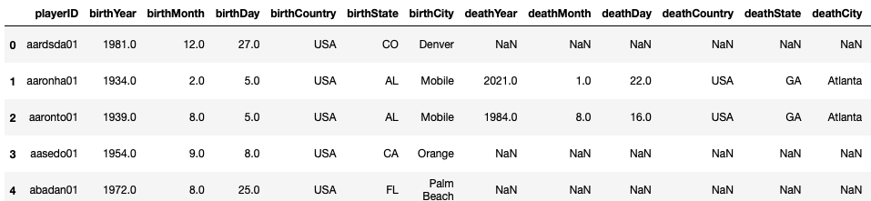
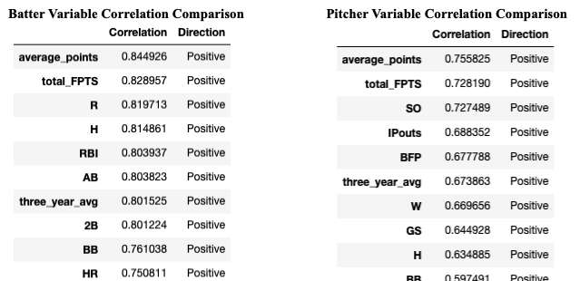
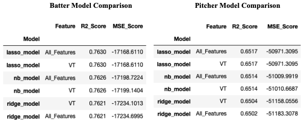
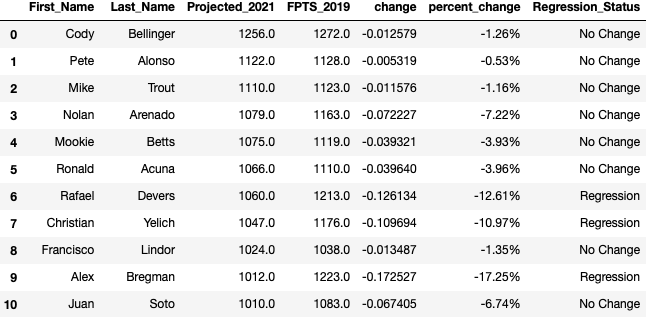
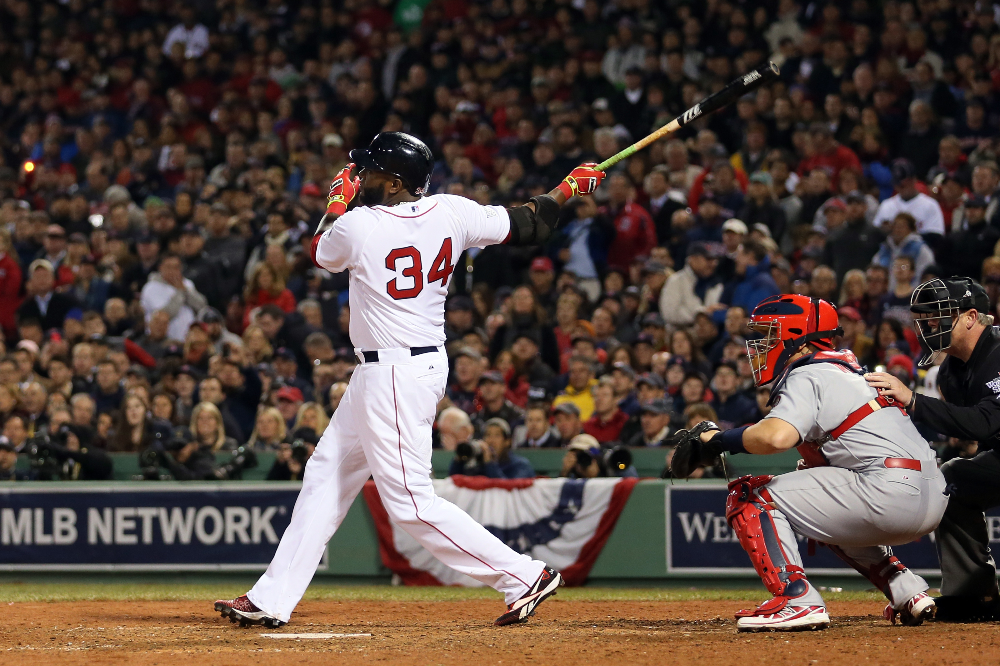

Overview
Baseball is known as America’s pastime. If you are like 20% of Americans (65M people) participating in some kind of fantasy sports (The Fantasy Sports & Gaming Association, 2020), there is a chance you have played fantasy baseball. Daily Fantasy Sports generated revenue of 2.91 billion U.S. dollars in 2019 (Statista, 2020) and is a growing industry thanks to recent legislation that has loosen sports gambling laws in America. The Supreme Court of the United States lifted the federal ban on sports betting on May 14, 2018 (Licata, 2019). Those of us who play fantasy sports are always looking for that extra edge when it comes to drafting their team for the upcoming season. For my first project this semester, I will be taking a look at various baseball player’s statistics from the previous ten seasons to create a model that will predict the fantasy points for a player in the upcoming season. I will then use those predicted next season’s fantasy points to categorize a baseball player as a regression candidate.
A player is said to be a regression candidate if they are expected to “regress to the mean” or have a season that is not as successful as they did the year previously. A regression candidate’s stats would return to normal, lower numbers compared to the previous season. This question would be beneficial for both MLB general managers and fantasy baseball managers (like myself) who are building a team. For the purposes of this project, I will be looking at this model through the lens of a fantasy baseball manager. That is not to say it could not be used by MLB general managers. However, fantasy baseball is how I will be using the model. When identifying if a player is a regression candidate, I will be comparing their expected fantasy points for the upcoming season against the points they had in the previous season. If the player's points are the same or higher than the previous season, then they will not be categorized as a regression candidate. If their expected points decrease by 10% compared to the previous season, then I will categorize them as a regression candidate.
Hypothesis
My hypothesis is that I can successfully predict the amount of fantasy points a MLB player will have in the upcoming season based on past performance. When drafting a fantasy baseball team it is all about value and drafting players who can contribute the most to your team at a reasonable cost. If you take a player in the first round who is not able to live up to the expectations of their previous season(s), then your season could be in serious jeopardy. Also, when looking for sleepers or mid-round players who also have a major impact on how your team performs during the regular season, it is important to understand who had a one hit wonder type season and which player’s stats will continue to meet expectations. By looking at a variety of metrics collected on MLB players for the past ten years, I want to create a model that will allow the fantasy manager to identify which players to avoid and which players they can trust in the upcoming season during their draft.
The Data
 Sample images from the datatset I will be using to train my model.For this project, I will be examining a database containing complete batting and pitching statistics from 1871 to 2020, plus fielding statistics, standings, team stats, managerial records and post-season data. As I mentioned above, although I have access to data going back to 1871, I will only be using data from 2010 through the 2019 season. I am only using the past ten years worth of data because baseball has shifted in playing style over the past ten years. This is mainly a result of increased use of analytics in baseball and shifting strategies due to this analytical adoption. Looking at stats from the 1950s when players were playing baseball a different style is not as useful when looking to identify regression candidates in 2021. Also, I will be excluding the 2020 season from my analysis as this was a shortened season (an outlier) due to the Covid-19 pandemic and will throw off my models.
In addition to the data provided by the dataset, I also had to create a couple new features I felt would be important to increase the accuracy of the model. The first column I had to create was the total fantasy points for that season. I used the standard head to head scoring system from CBS Sports to calculate these values (CBS Sports, n.d.). The next field I created was the rolling three year average of the player’s fantasy points. This gives a better snapshot of how the player typically produces compared to just the past season. I also created an overall total average fantasy points for the player. If the player had a one hit wonder season, these metrics will help the model to better understand and identify a regression candidate. Finally, I had to create a new column called Next_Year_FPTS as the dependent variable. It is the same scoring calculation as above for total fantasy points for the current season. However I had to look at the player’s stats from the next season to calculate this dependent variable that I am trying to predict with my test data.
Method
For the exploratory data analysis portion of the project, I did not have to perform a whole lot of cleaning or manipulating based on the dataset. The dataset was very clean in a csv file. There were only 14 items with missing values in the pitchers data set and none in the batters dataset. Leveraging the Pandas Profiling library, I was able to see a couple of items that may cause issues in my modeling and decide how to fix those issues:
- There were 14 players from 2007 - 2019 that had an ERA as N/A. This is because the pitcher never successfully got a player out. ERA is calculated the total runs given up by the amount of outs a pitcher records. Since these players never recorded an out, the ERA could not be calculated. I dropped these 14 players from my analysis as they were not a significant percent of the population (0.13%) and it is a rare occurrence. I did not want to change this value to 0 because an ERA of 0 is very good and these players did the opposite of very good.
- Due to trades occurring mid-season, a player could show up twice in a given year due to them changing teams/leagues/etc. I wanted to show the total points for this player for the entire year instead of showing total points on one team and total points on another team in one year. I merged these players into one row using a groupby function and then calculated their total fantasy points.
- I kept the pitcher and batter datasets separate because they have different metrics and felt combining them would clutter/overcomplicate the model.
It was reassuring to see that a lot of the variables had a high correlation to the target variable (next_seasons_fpts) and I did not feel the need to drop any of the metrics. I did not feel the model would be cluttered and there would not be too many unnecessary variables.
 Correlation results for both pitchers and battersOnce the data was collected, inspected, and perfected, I ran my data through seven different regression algorithms to predict MLB players expected fantasy points for the upcoming season. I chose to use regression algorithms to solve this problem because this is a supervised machine learning problem (I know the values of the output and can compare the model against the actual values) and I wanted to predict a continuous variable based on the data fed into my model. The seven models I chose to run my data through include:
- Linear Regression
- Decision Tree
- Random Forest
- Naive Bayes
- K-Nearest Neighbor
- Lasso Regression
- Ridge Regression
For my modeling, I split my data into a test and train sets. This allowed me to tune my model and test it against independent data to get an accurate idea of how the models are working. I will also exclude 2019 data from the modeling datasets as we do not have a Next_Year_FPTS for this data. This is the data I will be feeding into my model after the modeling portion is complete for production use.
Once I split my data into a testing and training set, I one hot encoded categorical variables to ensure my categorical variables would be able to be used in my regression modeling, I performed multiple feature reduction strategies including Principal Component Analysis (PCA) and Thresholding Numerical Feature Variance. For PCA, first I standardized the features so that they have the properties of a standard normal distribution with a mean of zero and a standard deviation of one. I then created the PCA with the n_components to 99% so that the variance of the original features would be retained. Thresholding Numerical Feature Variance removed the features with a low variance, i.e. likely containing little information and thus causing unwanted noise in your modeling. I created a variance threshold of 0.5. The variance threshold calculates the variance for each feature, and drops any feature that does not have a threshold greater than 0.5.
 Top 6 model results from the Batter and Pitcher modelsResults
I ran the batter and pitcher data sets through separate models to avoid overcomplicating the model with unnecessary statistics for the batter/pitcher. To determine what model is the best for predicting future player stats, I then compared the R2 and mean average error (MAE) of each model. To calculate this value, I ran the data through a 5 fold cross validated pipeline and took the mean of those five scores to calculate the final R2 and MAE of each model. In the modeling, I used all of the available, relevant statistics to predict what the next season’s fantasy points will be.
As you can see from the above modeling, the Lasso Regression model with all the original features performed best on both the pitcher and batter datasets. The R2 score was very similar for the Naive Bayes model and the Lasso Regression model. However, due to a lower MSE for the Lasso Regression model, I chose this as the model to move forward with. An R2 score of 0.76 for batters and 0.65 for pitchers indicates the model is a strong predictor of next year's fantasy points based on the independent data that was fed into the model.
Using the Lasso Regression model, I ran the 2019 dataset through the model to determine the upcoming 2021 projected fantasy points for a player. I then wrote a Python script that compared the player’s points to their previous season’s points to determine if the player is a regression candidate or not for the upcoming season. If their expected points decrease by 10% compared to the previous season, then I will categorize them as a regression candidate.
 Results from the batter modelingConclusion
Overall, I felt my project went well and my hypothesis was proven correct. Based on a high R2 score, I can confidently say my hypothesis was correct and that we can predict a player’s projected fantasy points for the upcoming season, on average, within 131 points for a batter and 226 points for a pitcher. Due to this ability, we can also successfully identify potential regression candidates for the upcoming season by comparing their projected points for the upcoming season to the previous season’s points.
Fantasy baseball has been a hobby of mine going back to the late nineties. I credit it for sparking my interest in data and analytics as a teenager. Little did I know when my dad took me to my first fantasy draft that I would be hooked and dig through data for advantages throughout my life. Using data science to predict future fantasy sports metrics is a fun way to use data science and analytics and I credit it for getting me interested in this career path.
